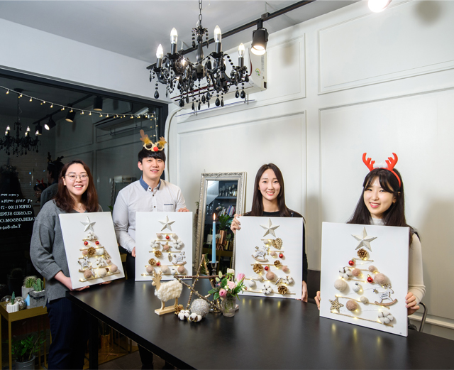
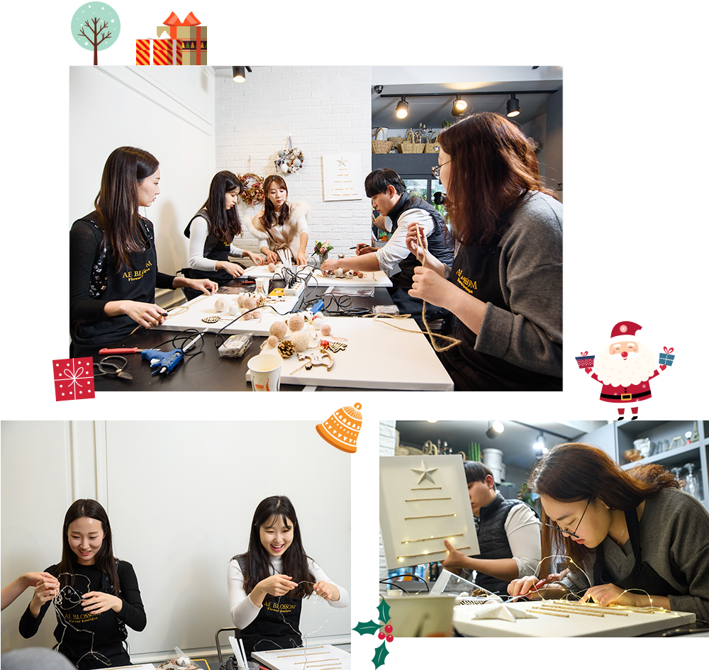
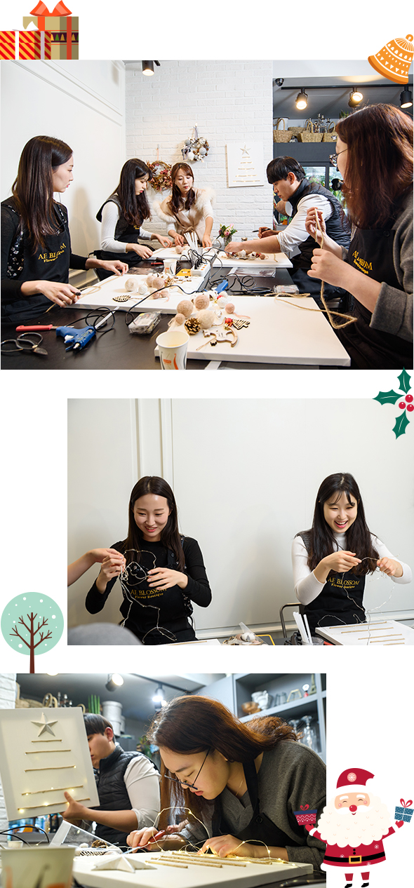
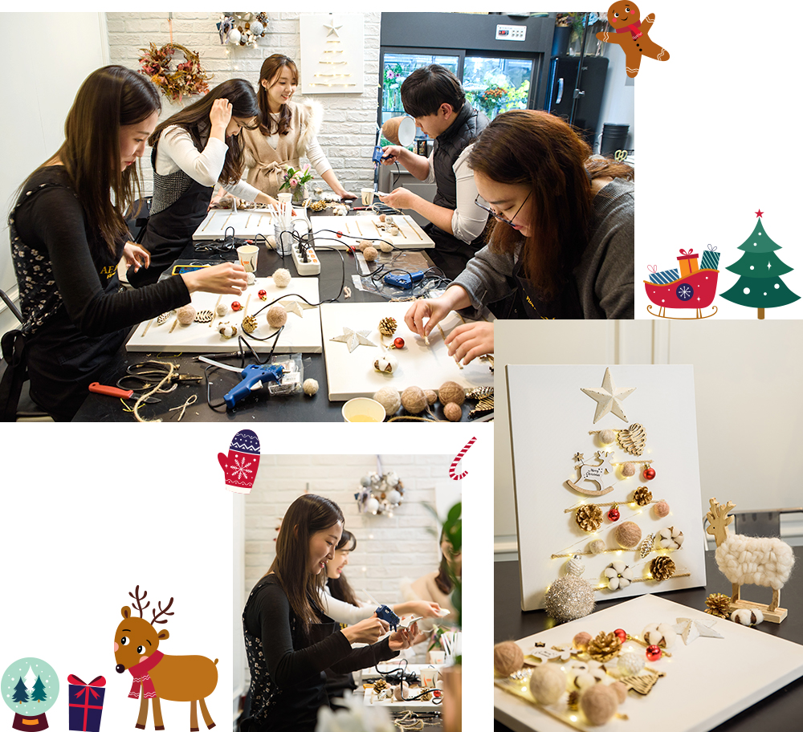
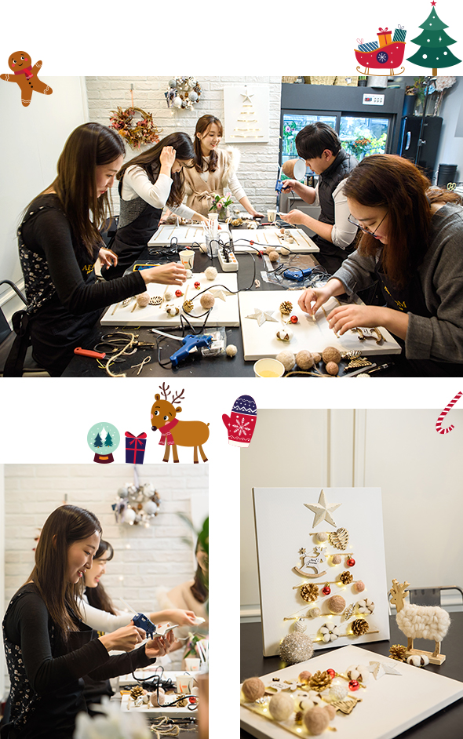
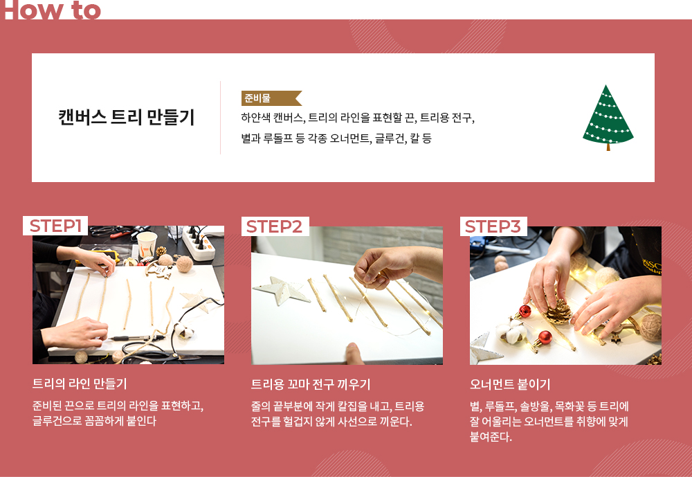
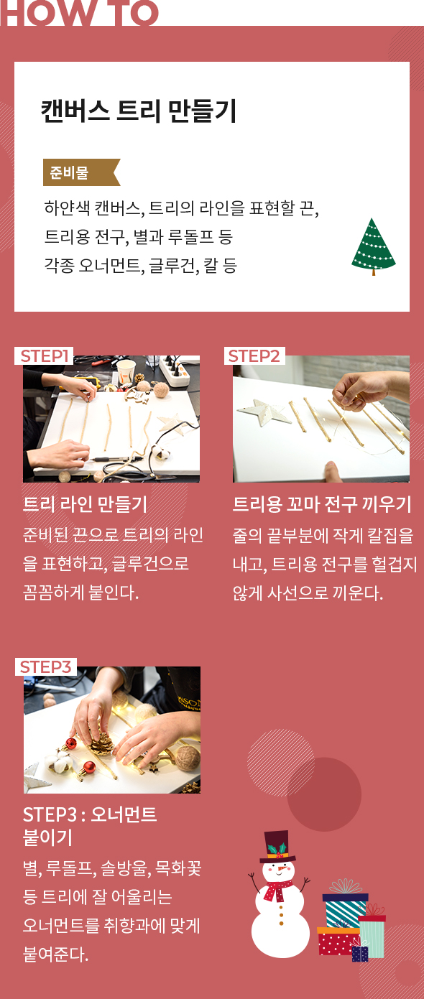

와 제 롤모델이 잡스에요!!! 아이폰 첫 출시되고 나서부터 계속 아이폰 쓰고 있는데 잡스가 너무 그리워요ㅠㅠ 지금은 돈만 벌려고 하는 것 같아서 디자인 발전도 없고ㅠㅠ와 제 롤모델이 잡스에요!!! 아이폰 첫 출시되고 나서부터 계속 아이폰 쓰고 있는데 잡스가 너무 그리워요ㅠㅠ 지금은 돈만 벌려고 하는 것 같아서 디자인 발전도 없고ㅠㅠ와 제 롤모델이 잡스에요!!! 아이폰 첫 출시되고 나서부터 계속 아이폰 쓰고 있는데 잡스가 너무 그리워요ㅠㅠ 지금은 돈만 벌려고 하는 것 같아서 디자인 발전도 없고ㅠㅠ와 제 롤모델이 잡스에요!!! 아이폰 첫 출시되고 나서부터 계속 아이폰 쓰고 있는데 잡스가 너무 그리워요ㅠㅠ 지금은 돈만 벌려고 하는 것 같아서 디자인 발전도 없고ㅠㅠ와 제 롤모델이 잡스에요!!! 아이폰 첫 출시되고 나서부터 계속 아이폰 쓰고 있는데 잡스가 너무 그리워요ㅠㅠ 지금은 돈만 벌려고 하는 것 같아서 디자인 발전도 없고ㅠㅠ
오! 해피데이
한 발 앞서 맞이하는
미리 메리 크리스마스!
미리 메리 크리스마스!
유니크한
캔버스 트리
만들기
캔버스 트리
만들기
유니크한
캔버스 트리 만들기
캔버스 트리 만들기

부산지역 현상인들이 누구보다 먼저 크리스마스를 맞이하기 위해 캔버스 트리 만들기에 도전했다.
눈처럼 새하얀 캔버스와 아기자기하게 예쁜 오너먼트, 영롱한 조명들이 만들어내는 환상적인 분위기에
빠져든 현상인들의 얼굴에는 크리스마스만큼이나 밝고 환한 미소가 활짝 피었다.
글편집실
사진김선재(페니레인 스튜디오)
촬영 협조애블라썸
남들과는 다르게, 누구보다 예쁘게
요즘 크리스마스의 대세 아이템 중 하나를 꼽으라면, 단연 캔버스 트리가 아닐까 싶다. 만드는 사람의 개성과 취향에 따라 각기 다른 작품을 연출할 수 있다는 것이 가장 큰 매력인 캔버스 트리는 적당한 크기에 벽에 걸어둘 수 있는 실용성까지 겸비했다는 점에서 가장 트렌디한 크리스마스 아이템으로 떠오르고 있다.
“먼저, 끈으로 트리의 라인을 만들어줄 거예요. 아래서부터 위로 올라갈수록 끈의 길이가 짧아지도록 길이를 조정해주세요. 어떤 오너먼트를 어디에 붙일지 전체적인 구조를 생각하면서 끈과 끈 사이의 높이를 조정해주는 것이 중요해요. 큰 오너먼트를 붙일 자리는 세로 길이를 높게 벌려주세요.”
강사의 말에 따라 끈을 자르고 붙이는 현상인들의 모습이 제법 진중하다. 원데이 클래스는 이번이 처음이라는 권준오 사원과 원해빈 사원도, 예쁜 캔버스 트리에 홀딱 반해 도전했다는 안혜승 사원과 조은진 사원도 섬세하고 꼼꼼하게 자신만의 라인을 만들어나갔다. 그렇게 윤곽을 드러낸 트리는 벌써부터 길이도 간격도 모두 달라서 개성만점의 모습이다. 트리의 모서리에 작게 구멍을 뚫고 반짝이는 조명을 달아주니 ‘이제 절반은 성공한 셈’이라는 강사의 격려가 돌아왔다.


해피 크리스마스를 바라는 소망을 담아
이어진 순서는 캔버스 트리 만들기의 대미를 장식할 오너먼트 달기. 트리의 가장 꼭대기에는 ‘진리’와 ‘바른길’을 뜻하는 큰 별을 달아주고, 그 아래에는 ‘풍요’와 ‘행복’을 기원하는 동글동글한 털실공, 금색으로 반짝이는 솔방울, 따뜻하고 폭신해 보이는 목화꽃 등의 오너먼트를 개성 있게 배치해 붙여준다.
원해빈 사원은 전구를 달고 오너먼트를 붙이는 과정이 생각만큼 쉽지 않은지 시종일관 고심하는 소리를 노래처럼 이어가며 모두에게 큰 웃음을 주었다. “예쁜 캔버스 트리를 만들고 싶어서 도전했는데요. 의욕은 앞서는데, 생각만큼 손이 안 따라줘서 조바심이 나고, 어렵기도 했어요. 그래도 열심히 시간과 노력을 들이면 나만의 작품이 완성될 것 같아 설렘 반, 기대 반입니다.”
평소 마카롱, 캔들, 반지 만들기 등 다양한 체험을 즐겨왔다는 조은진 사원은 경험자답게 본인 작품에 집중하면서도 다른 현상인들을 격려하는 여유까지 보이며 훈훈함을 더했다. “차근차근 자신만의 트리를 만들어가는 현상인들을 보니, 함께해서 즐겁고 보람차다는 마음이 드네요.”
안혜승 사원은 “미적 감각이 정말 뛰어나신 것 같아요”라는 강사의 칭찬과 함께 퀄리티 높은 작품을 만들어냈다. 다른 현상인들의 “판매해도 되겠다”는 감탄사가 이어지자 얼굴에 뿌듯함이 가득해 보였다.
말솜씨도 없고, 손재주도 없다며 본인이 가장 끝 순위를 담당할 테니 모두 안심하고 작품에 매진하라던 권준오 사원은 강사로부터 “독특함과 균형미가 돋보인다”는 칭찬을 받으며, 본의 아니게 다른 현상인들의 부러움을 샀다. “처음 원데이클래스에 도전해봤는데 기대 이상으로 재미 있어요. 체험 자체도 즐거웠지만 다른 현상인들과 이야기를 나누며 추억을 쌓을 수 있다는 점이 정말 매력적인 것 같습니다”라며 강력 추천했다.


마침내 완성된 캔버스 트리에 나만의 사인까지 새겨 넣으니, 유니크한 크리스마스 아이템이 빛을 발한다. 크리스마스 홈 데코의 역할을 톡톡히 해내는 것은 물론, 콘센트 없이 벽에 걸어두고 야간 조명으로도 활용 가능하니 금상첨화. 뚝딱뚝딱 내 손으로 만들어 더욱 소중하고 더욱 특별한 트리로 더할 나위 없이 행복한 크리스마스가 완성될 것만 같다.
Mini Interview
-
권준오 사원부산운영팀평소 눈으로만 봤던 트리를 직접 만들어보니 감회가 감회가 남다르네요. 다가올 크리스마스에는 직접 만들어 더욱 예쁘고 정이 가는 캔버스 트리로 제 공간을 꾸며보고 싶네요. 예쁘고 사랑스러운 여자친구와 함께하면 더 좋겠죠?(하하)
-
안혜승 사원수입고객지원팀제 마음에 쏙 드는 캔버스 트리가 완성되어 정말 뿌듯합니다. 12월에 이사할 집에 인테리어 소품으로 걸어두면 정말 예쁘고 집안 곳곳이 환히 밝아질 것만 같아요. 새집에서 맞이하는 크리스마스 홈파티가 벌써부터 기대되네요.
-
원해빈 사원부산운영팀캔버스 트리는 다양한 곳에 활용할 수 있고, 한 번 배워두면 간단한 재료만으로 혼자서 만들 수 있어 좋은 것 같아요. 오늘 배운 것들을 동생에게도 알려줘서 크리스마스 시즌에 동생과 같이 집안 곳곳을 예쁘게 장식해야겠습니다.
-
 조은진 사원부산운영팀캔버스 트리 만들기는 처음이었는데 정말 유니크하고 재미있었어요. 오늘의 경험을 살려 다른 홈 데코 아이템 만들기에도 도전해보고 싶습니다. 올 크리스마스는 캔버스 트리와 함께 더욱 따뜻하고 포근하게 보낼 수 있을 것 같아요.
조은진 사원부산운영팀캔버스 트리 만들기는 처음이었는데 정말 유니크하고 재미있었어요. 오늘의 경험을 살려 다른 홈 데코 아이템 만들기에도 도전해보고 싶습니다. 올 크리스마스는 캔버스 트리와 함께 더욱 따뜻하고 포근하게 보낼 수 있을 것 같아요.


#Tag
- #아크릴화원데이클래스 #신슬미 #이지헌 #홍성범 #하지윤
-
최고예요
322
-
좋아요
322
-
슬퍼요
322
-
그저 그래요
322
-
화나요
322